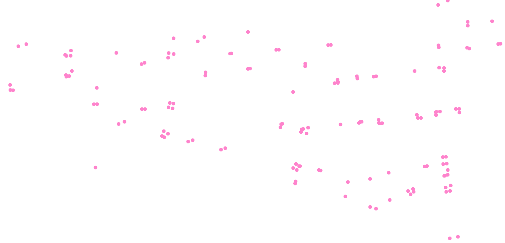

Situ is the prototype of my PhD research-creation project. It asks whether a game-like 3D experience can pass on and archive the spatial culture and urban rhythm of Griffintown, Montréal.
I build it as small systems from the city's open data, each tested before the next one uses it. Eight systems are verified: streets, space syntax scores, traffic rules, buildings, hours of the week, street objects, commuters and views. The ninth is partial: it imagines a weekday morning on foot and compares it with the city's counts.
Nothing is archived yet, and the game itself is planned. Everything so far comes from open files and street images, read at my desk. The counts cover nine weekdays at seven junctions, and the people who live here have not yet been asked. Limits
Griffintown, Montréal
Mohamed Gharbia
Concordia University, 2026